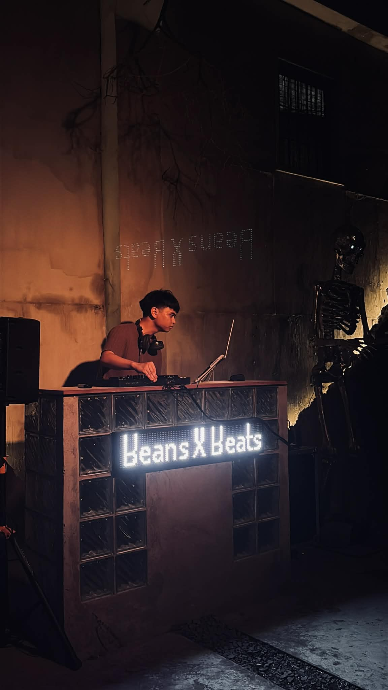

Responsive Landing Page Project
A responsive landing page built with HTML, CSS, and JavaScript, featuring modern design and interactive elements. My first web design project during my early work at The Pinnacle Operating Systems Inc.
Here are some of my featured projects showcasing my web development skills and expertise.
A responsive landing page built with HTML, CSS, and JavaScript, featuring modern design and interactive elements. My first web design project during my early work at The Pinnacle Operating Systems Inc.
A website for JCI Silang organization, featuring information about the group, their projects, and contact details. Built with HTML, CSS, and JavaScript for a clean, informative presentation.

A clean and responsive bio landing page for Migo-wav, built with HTML, CSS and JavaScript. It features a modern mobile-friendly layout and is deployed on Netlify for easy online access.